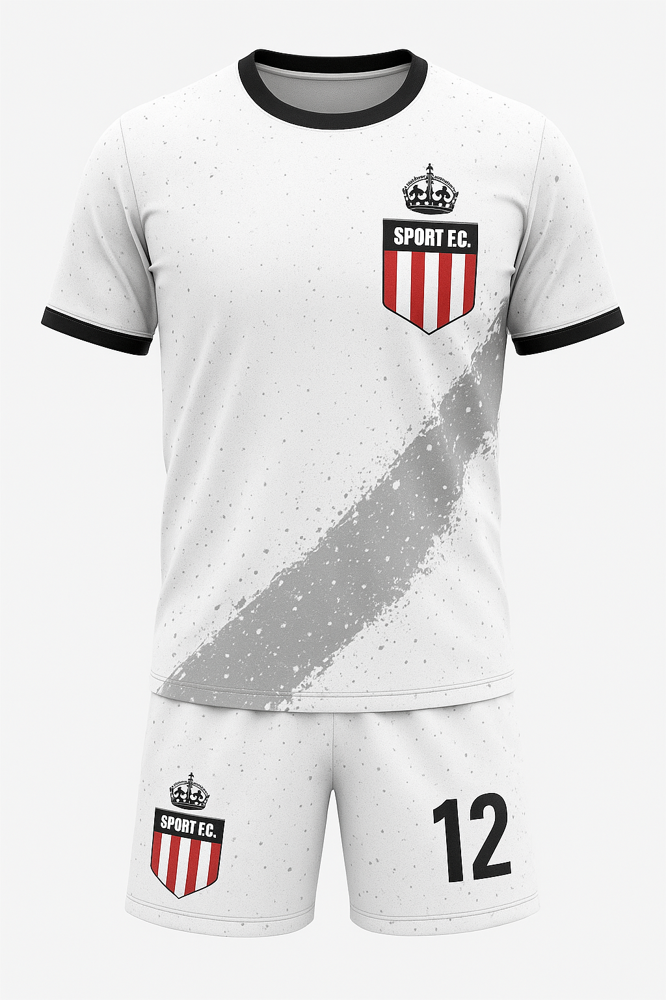

Formando atletas e cidadãs através do futsal
O projeto SPORT F.C. oferece aulas gratuitas de futsal para meninas, jovens e mulheres em Tupanciretã/RS. Nosso objetivo é promover a inclusão social, o desenvolvimento esportivo e o fortalecimento dos valores pessoais e coletivos através do esporte.
Faixas etárias:
Documentos necessários: RG ou certidão de nascimento, comprovante de residência, atestado médico, autorização do responsável (para menores).
üì≤ Clique aqui para se inscrever via WhatsApp| Categoria | Dia | Horário | Local |
|---|---|---|---|
| Sub-15 | Segunda-feira | 16h às 17h | Ginásio Bonumá |
| Sub-15 | Sexta-feira | 17h às 18h | Ginásio Bonumá |
| Sub-05 | Sábado | 16h às 17h | Ginásio Iva Chiapetta |
| Adulto | Quinta-feira | 19h às 20h | Ginásio Bonumá |
Uniforme Oficial:
Uniforme de Treino:
Coletes de Treino:
WhatsApp: (55) 9 9691-5636
E-mail: sportfootbalclub@gmail.com
Siga-nos nas redes sociais: @sport.fc_